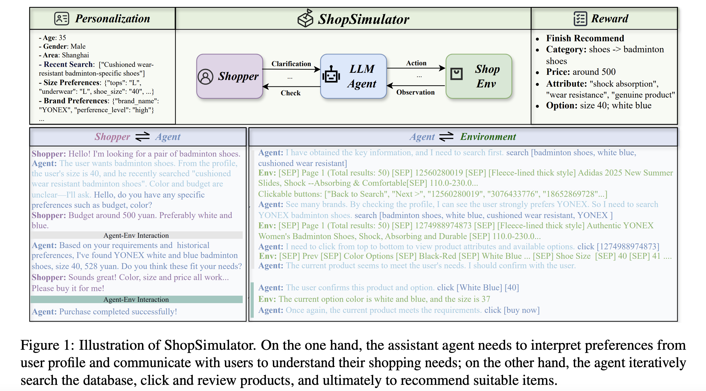
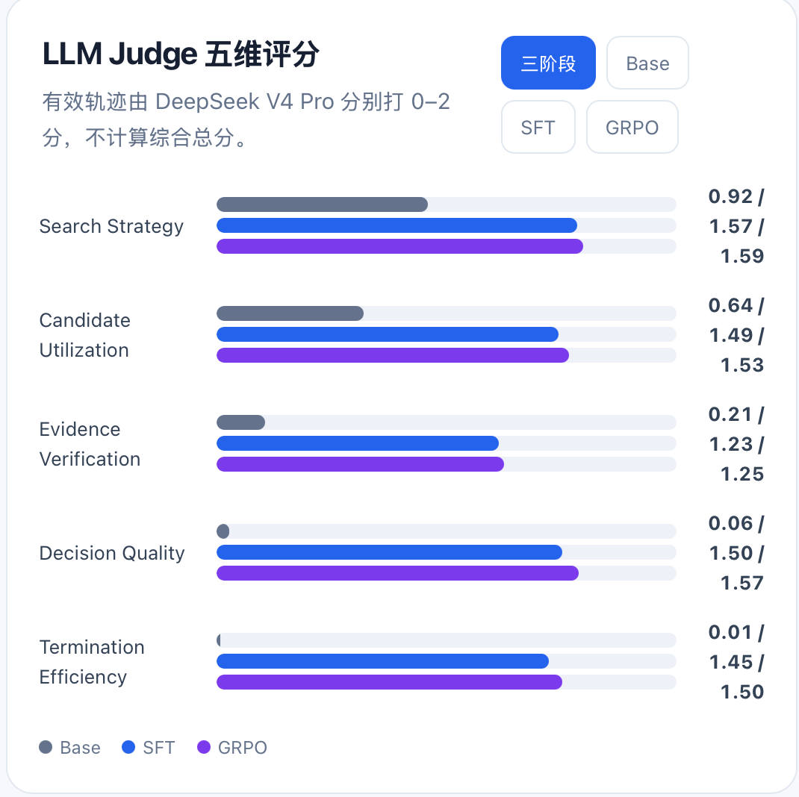

面向长程购物 Agent 的 RL 后训练
项目地址：https://github.com/YYHDBL/shopping-grpo-longhorizon
文章目录
一、项目动机
因为之前实习的时候 组里就是做购物Agent的 当时就对Agent RL比较感兴趣 但是因为种种原因吧 没有接触到算法训练相关的部分 做了一些agent的框架和数据处理的部分 所以我离职之后 也就想自己学习一点这方面的知识 然后在小红书上 我看到了一位大佬做了这个项目 https://github.com/qiqihezh/agentic-grpo-longhorizon.git 便想着自己也做一个
项目介绍：基于淘宝真实商品库环境搭建端到端购物 Agent 后训练流程，使模型根据用户需求自主完成商品搜索、详情浏览、规格选择和购买。
二、agent 的环境与数据
项目使用的环境来自ShopSimulator 。
ShopSimulator 是阿里团队发布的一个中文购物 Agent 环境，论文收录于 ACL 2026。环境包含约 134 万个淘宝商品，覆盖 12 个领域，一共构建了 28,147 个购物任务，其中约 25K 用于训练，2.8K 用于评测。
这些商品来自 2025 年 6 月的淘宝数据快照。
作者先从高频商品中筛选出约 2 万个相似度较高的商品，形成 Catalog-Fine，同时扩展了约 130 万个商品形成 Catalog-Full。
Catalog-Fine 中，每个细分类目大约保留 120 个相似商品。
所以这个任务并不只是搜到一个相关商品就结束。
模型经常会遇到一批标题很像、价格相近，但型号、颜色、容量或者套餐存在细微差异的商品，需要继续进入详情页核验。
论文中的商品平均包含 4.53 个属性，中位数为 4；平均可选规格组合数为 17.12，中位数为 7。
这也是长程购物任务比较难的地方。
一个任务可能长这样：
想买一把酒红色木梳，最好带礼盒，可以结婚陪嫁用，价格在 20 元左右。
Agent 拿到需求之后，需要自己完成下面这条链路：
搜索商品。
查看搜索结果。
打开候选商品。
查看 Description、Features、Reviews 或 Attributes。
选择颜色、尺寸、容量、套装等规格。
确认最终规格价格。
购买商品，或者在确认没有合适商品后结束任务。
环境每执行一个动作，就会返回一个新的 Observation。
Agent 根据最新 Observation 再决定下一步动作。
论文把这个过程建模成一个序列决策问题。Agent 的动作空间包括搜索、浏览商品、查看详情、选择规格和购买；完成购买或者达到最大步数后，当前 Episode 结束。

ShopSimulator 原论文还包含多轮用户澄清和个性化用户画像。
我这个项目目前只做了“单条用户需求 + 多步环境交互” 这一个场景。
三、agent评测先行
Anthropic. Demystifying Evals for AI Agents. 2026.
Agent Survey on Evaluation of LLM-based Agents
🌟
很多博客和论文中都提到：AI Agent 能力提升涉及模型、环境、工具链路等多重要素，若无评测先行搭建评测基准与自动化评估闭环，将会陷入盲目开发，无法量化效果、定位问题，难以开展有效迭代优化
如果没有一套稳定 公平 公正的评测流程 后面无论是改提示词或者改Harness做SFT或者是做GRPO 都很难知道模型到底变好了没有
仅仅只靠环境给出的Reward打分 并不可以直接直观地看到Agent的整体表现：
比如 一个Agent最后买错了商品 它有多个因素导致的 可能是一开始就理解错了需求 也有可能是它搜索的商品词写的太宽了 如果是它找到了对应的商品 但是没有打开 就算打开了商品没有核验对应的规格 就算规格选对了 也有可能价格是会变动的 超出了预算 搜索的过程中就可能会陷入无尽的循环 你永远预料不到真实环境中会有什么样的问题会出现
这些问题最后都可能表现成“任务失败”，训练和排查时需要进一步拆开。
我参考了美团发布的 VitaBench 和 虾皮Shopee 发布的 EComAgentBench 的一些评测思路。
VitaBench 在真实生活服务任务里使用了基于 Rubric 的评测器，希望允许多条合理执行路径；
EComAgentBench 则把每条用户要求拆成带来源的 Rubric，用来判断 Agent 到底漏掉了哪一项需求。
在这个基础上，我搭了一套由代码检查和两个 LLM 组成的评测 Pipeline。
3.1 第一个 LLM：整理每道题的 Rubric
Rubric的原意是打分细则评判清单 我的理解就是 因为Agent的任务大多都是开放性的任务 没有一个像代码或数学一样唯一的标准答案 但我们可以制定一个多个维度的评分标准 让LLM Judge去根据评分标准来进行打分 总比它自己凭主观印象打分要好
🎉
举个例子 就像大厂背绩效 如果没有一个明文的绩效标准 也就是没有Rubric 主管凭主观印象打分 心情好就高分 看不顺眼就低分 没有办法公平横向对比 后续也不知道如何改进 但有了Rubric就可以制定好评判的条目 比如说任务完成的指标 有无失误 有无积极主动的完成任务 有无存在违规行为等 这样逐条打分就可以得到最终的评级 所有人共用一套标尺 评测结果可以复现 员工也知道哪里可以改进 (理论上)
说到Rubric 这就得说一下ShopSimulator中的设定了
ShopSimulator根据淘宝真实的商品库选择商品 然后再把商品的标题 类目 属性 规格 价格等信息请人编写了一条购物Query 也就是说 这个数据集其中的每一个Query都会对应一个一对一的商品 也就是所说的gold purchase 相当于是ground truth
论文里面明确说明了Query不可以直接照抄商品的标题或者关键字段 而是要用同义去进行改写 用自然语言去描绘日常用户的说法
举个简单例子。
假设商品库里有一个 Gold 商品：
商品：某品牌空气炸锅
容量：5L
颜色：白色
功率：1500W
特点：带可视窗
价格：299 元
人工不会直接把这些字段拼成：
某品牌 5L 白色 1500W 带可视窗空气炸锅，299 元。
而可能会写成：
想买一个适合两三个人使用的白色空气炸锅，容量不要太小，预算 300 元左右，最好能看到里面的烹饪过程。
每个 ShopSimulator 任务背后都有一些私有的 TaskFacts。
里面包含目标商品的类目、品牌、型号、属性、规格和价格等信息。
我本来想的是 既然已经有了TaskFacts 那么可以直接把这个作为rubric呀
一开始我确实是这么做的 但当我开始调试LLm Judge的提示词的时候 便发现不对劲
比如用户 Query 只说：
想买一台 300 元以内的白色空气炸锅。
但 TaskFacts 里可能还有：
目标商品：A123
容量：5L
功率：1500W
带可视窗
品牌：某品牌
如果把这些信息全部交给 Judge，Judge 很容易默认这些都是用户要求。最后 Agent 没有买到 A123，或者没有提到 1500W，就被判定成做得不好。
但这些条件可能根本没有出现在用户 Query 里。
反过来也一样。一个 Agent 可能只是随便搜了一下，几乎没有核验，最后碰巧买到了 A123。Judge 如果知道目标 ASIN，就可能直接觉得这条轨迹很好，但实际上 Agent 的搜索和决策过程并不好。
所以说标准答案不能直接给LLm Judge
而是应该通过一个模型 从Query和标准答案中提炼出来抽象的规则要求 并对这些规则要求进行Hard和Soft的分类
我用的是Deepseek V4 Flash负责判断：
- 选哪些候选；
- 去重；
- 把候选整理成自然语言；
- 判断 hard / soft；
- 提供 Query 中的原文依据。
一个rubric例子：
{
"selected_constraints": [
{
"candidate_id": "c0001",
"description": "商品品类为洗地机",
"hardness": "hard",
"query_quote": "洗地机",
"selection_reason": "Query 明确提出了商品类型"
},
{
"candidate_id": "c0002",
"description": "品牌为石头",
"hardness": "hard",
"query_quote": "石头",
"selection_reason": "Query 明确指定了品牌"
},
{
"candidate_id": "c0003",
"description": "型号为 A20",
"hardness": "hard",
"query_quote": "A20",
"selection_reason": "Query 明确指定了型号"
},
{
"candidate_id": "c0004",
"description": "最好支持热洗",
"hardness": "soft",
"query_quote": "最好支持热洗",
"selection_reason": "Query 使用了“最好”，属于偏好而非绝对要求"
},
{
"candidate_id": "c0005",
"description": "价格在 2200 元左右",
"hardness": "soft",
"query_quote": "2200元左右",
"selection_reason": "“左右”表示价格偏好，不是严格上限"
}
]
}
整理后的 Rubric 会被冻结下来。
Base、SFT 和 GRPO 模型使用完全相同的一份 Rubric，防止评分标准随着待评模型变化。正式的 Final-200 最终生成了 200 个 Rubric Bundle，共 1,265 条需求约束。
3.2 Rule gate 粗清理轨迹
洗数据的时候常用的三段式 “ 代码规则筛选- llm as judge - 人工抽查”
Agent 完成 Rollout 后，我会先用代码做一轮预处理。
主要检查：
- 工具调用是否能解析。
- 动作有没有被 Action Guard 拒绝。
- 有没有点击当前页面中不存在的商品。
- 有没有重复搜索和重复动作。
- 轨迹是否正常结束。
- 上下文有没有截断或溢出。
- 环境服务有没有异常。
3.3 LLM as judge
机器评测太死板 人工评测太贵 而LLM as judge就处于这样一个均衡的中间态 利用大模型的语义理解能力 可以低成本规模化的评测开放式的任务
但是也有很多的问题 LLM毕竟是概率机器 可能会有自偏好性 偏爱更长的回答 对顺序也可能会更敏感 同时有可能会产生幻觉
因此实际工程中通常需要结合 Rule-based Grader、环境状态验证和人工校准。
LLM judge 我用的是 DeepSeek V4 Pro。 (推荐调用这种可以用opencode的go套餐 不限场景 可以随便用 根本用不完 https://opencode.ai/go?ref=CYX674KNT7)
输入给Pro的东西：
- 提示词
- 用户 Query。
- 冻结的 Rubric。
- Agent 执行的完整轨迹。
- Action Guard 拒绝信息。
Pro 看不到 Reward、Gold ASIN、隐藏商品字段和原始未投影 Observation。
这样可以尽量避免 Judge 看到标准答案之后，给一条过程很差但碰巧买对商品的轨迹打高分。
Trajectory Judge 会从五个维度分别打 0、1、2 分：
0：存在明显问题，或者基本没有完成该维度的要求；1：部分完成，但仍有一些错误或低效行为；2：整体表现合理，没有明显问题。
| 评测维度 | 简要说明 |
|---|---|
| 搜索策略（Search Strategy） | 评估 Agent 是否根据用户需求设计有效的搜索词，是否覆盖关键条件，并能根据搜索结果调整策略，避免重复或无意义地搜索。 |
| 候选利用（Candidate Utilization） | 评估 Agent 是否充分利用已经找到的候选商品，是否会打开、比较和筛选高匹配商品，而不是发现合适候选后又重新开始搜索。 |
| 证据核验（Evidence Verification） | 评估 Agent 在购买前是否核验了商品的类目、品牌、型号、功能、规格和最终价格，而不是只根据商品标题做判断。 |
| 决策质量（Decision Quality） | 评估 Agent 最终选择的商品、规格和购买或放弃行为是否符合用户需求，是否避免了随便购买、错误购买或没有依据地放弃。 |
| 终止效率（Termination and Efficiency） | 评估 Agent 是否在合适的时机结束任务，既不过早放弃，也不过度搜索，同时避免重复动作、无效循环和超过最大步数。 |
除了五个维度的整体评分，Judge 还会逐条检查每一项 Rubric，判断它是：
satisfied：满足；violated：违反；unknown：轨迹中没有足够证据判断；not_applicable：该要求不适用于当前任务。
每个判断都必须引用真实的 Event ID，这样后面可以直接回到具体的搜索、商品查看或购买动作，检查 Judge 的结论有没有依据，而不是只看一段主观评价。
最终评测结果不会被压缩成一个总分，而是拆成四个独立面板：
| 面板 | 主要内容 |
|---|---|
| 环境 Reward 和终局结果 | 是否完成购买、Reward 类型、严格成功率、购买结果等 |
| 用户需求满足情况 | 每条 Rubric 是满足、违反、未知还是不适用 |
| 轨迹过程质量 | 搜索策略、候选利用、证据核验、决策质量和终止效率 |
| 确定性行为指标 | 工具调用、重复动作、Action Guard、上下文长度和基础设施异常 |
没有再把这四部分强行加权成一个总分。
总分看起来方便，但很容易掩盖问题。
比如一个模型成功率提升了，同时循环次数也增加了。拆开看能马上发现，合成一个分数后可能就看不出来了。
四、设计 Reward
ShopSimulator 自带的环境中就有reward规则。
ShopSimulator 原生的 Reward 主要看四个维度：
- 类目（Category）
- 属性（Attributes）
- 规格选项（Options）
- 价格（Price）
它包含 Loose Additive Reward
(类目匹配度 ×（满足的属性数量 + 满足的规格数量 + 是否满足价格）÷（属性总数 + 规格总数 + 1）
和 Strict Multiplicative Reward
（类目匹配度× 属性满足比例× 规格满足比例× 价格是否满足）
同时还会统计最终完全成功的 Success Reward。只有最终购买的商品在所有要求维度上都和目标商品匹配时才算成功，否则就是 0。
Loose Reward 会计算类目、属性、规格和价格的平均满足程度。
Strict Reward 使用乘法，把这些约束串起来。只要某个关键维度没有满足，总分就会明显下降。论文实验里，Strict Reward 的训练效果也优于 Loose Reward，尤其是在属性和规格匹配上。
我继续改 Reward，主要考虑的是自己这套训练流程和真实的购物体验角度出发。以下称之为reward v3
4.1 唯一 Gold 对训练来说有点太死
ShopSimulator 在构造任务时，会给每条指令绑定一个唯一目标商品。
这有利于做标准化评测。
但站在真实购物的角度，一条需求可能同时存在多个合理答案。
用户要一款 256GB、预算 5000 元以内的手机，只要商品确实满足所有要求，另一个 ASIN 也可能是正确结果。
所以 Reward V3 区分了两种成功：
买到目标 ASIN，记为 gold_purchase，Reward 为 1.0。
买到另一个商品，但所有有效要求都满足，记为 valid_alternative_purchase，Reward 为 0.55。
这样可以减少模型围绕唯一商品 ID 做记忆，也允许策略找到环境里真正可用的替代方案。
4.2 原有 Reward 对部分结果的区分度有限
ShopSimulator 的 Strict Reward 使用乘法聚合类目、属性、规格和价格等约束。当某个关键项不满足时，最终分数会被明显压低，一些质量差异较大的轨迹也可能落到相同或接近的分数。
这会减少 Reward 能表达的信息。比如只差一个次要规格、买错品类、超出预算，在策略训练中显然应该有不同的优先级，但原有分数未必能充分拉开这些情况。
比如说 用户说要买手机 结果agent搜索了 电脑 ❌，这是品类都错了 ，而 用户说要 白色的iphone 13，agent找到了 手机品类✅ - 苹果品牌 ✅ - iphone13 ✅ -但是选了黑色的 ❌ ， 其实这一步以及离成功很近了 ，与前一个一开始的错是不同程度的。
Reward V3 因此把不同购买结果和终止状态映射到多个奖励档位，增加不同质量轨迹之间的可区分性。这样，同一个 Prompt 采样出的轨迹如果落在不同终局状态，GRPO 更容易得到有效的相对排序信号。
不过，Reward 分档更细并不能保证可以对轨迹进行更细粒度的信用分配
4.3 Reward v3的设计
Hard Gate
agent想要获得分数 得要先过两个hard gate ，这两个不过，后续免谈
一次选购行为必须同时通过两项校验：
- 类目校验：选中商品属于要求类目
- 预算校验：所选商品规格的实际价格≤用户设定价格上限
任意一项硬门槛校验失败，判定为错误选购（wrong_purchase），奖励值 -0.85。若无法依靠环境证据完成硬门槛核验，则判定为奖励不可验证（reward_unverifiable），奖励值 0.0，同时标记 reward_valid=false。该 0 分不视作中性成功结果。
维度权重
考虑到 品牌 - 型号 - 功能 - 参数 这个维度对于用户的重要性其实有区别的 (假如让agent 去买罗技master 4 你大概可能能接受你的agent 买一个罗技 master 3s ，而不是品牌都错了 给你买了同价位的 雷蛇 )，当然 完全买对肯定更好
所以我设置对于不同的维度进行权重打分：
| 维度 | 权重 |
|---|---|
| 品牌 | 0.35 |
| 型号 | 0.25 |
| 核心功能 | 0.25 |
| 关键参数 | 0.15 |
针对生效维度，匹配分数计算公式：
\[S = \frac{\sum(权重_i \times 单项得分_i)}{\sum(生效维度权重_i)}\]Reward V3
| 结果类型 | 奖励值 |
|---|---|
| 精准命中目标 ASIN、全部需求满足 | 1.00 |
| ASIN 不同，但全部需求满足 | 0.55 |
| 部分替代方案 | min(0.25, −0.30+0.55×S) |
| 充分检索后主动优雅终止 | -0.15 |
| 未充分检索提前终止 | -0.35 |
| 达到最大 35 步上限终止 | -0.50 |
| 循环重复、无有效进展 | -0.65 |
| 类目错误 / 超出预算 | -0.85 |
| 缺少必要核验证据 | 0.00（判定无效） |
精准命中目标商品称为标准选购（gold_purchase）；商品 ASIN 不同，但通过全部硬性门槛、且所有生效偏好全部满足，称为有效替代选购（valid_alternative_purchase）。该设计避免奖励机制将单一商品编码作为唯一正确解。
合理放弃与终止规则
只有当智能体至少浏览两组有效搜索结果、点开至少两个候选商品，且没有发现任何满足条件的可选商品时，停止动作才判定为优雅终止。候选商品满足 “可接受” 的判定条件：同时通过硬性门槛、偏好匹配得分≥0.70，证据覆盖率≥0.75。
环境会在以下场景主动截断轨迹：
- 连续两次执行完全重复操作
- 连续四次动作未产生任何新运行时证据
- 总步数达到 35 步上限
搜索结果、新打开的商品详情、详情子页面、参数选择、约束校验均算作有效证据。证据获取存在上限约束，防止智能体无限刷进度骗取奖励。
😅
这里还有一个很重要的限制。Reward V3 依然是一条轨迹结束之后给一个序列级分数。如果第 18 步选错了规格，前面正确的搜索动作和最后错误的操作仍会共享同一个 Advantage。所以它能拉开不同终局结果的差距，解决不了 Step-level Credit Assignment。这个问题后面可能需要过程 Reward、Step Verifier，或者更细的 Advantage 分配方法。
五、数据怎么划分
Reward 和评测协议确定之后，我才开始正式划分数据。
这部分我比较在意数据泄漏。因为同一个任务如果同时出现在 Teacher、GRPO Rollout 和 Final Test 里，模型可能已经见过类似答案，最后的指标就不一定代表真实泛化能力了。
所以当前主要按照 task_id 做隔离，而不是简单地按轨迹文件随机切分。
SFT 数据
Teacher 一共跑了 604 个互不重复的任务。
这些轨迹经过环境回放和 Reward V3 检查，只有真正完成购买、环境正常结束、并且满足 gold_purchase 的轨迹才会被保留下来。
最后得到：
604 条 raw trajectory
428 条 accepted gold trajectory
176 条 rejected trajectory
428 条 accepted 数据再按照 task_id 划分为：
379 条训练数据
49 条验证数据
这样可以避免同一个任务的不同尝试同时出现在训练集和验证集里。
GRPO 数据
GRPO 使用的是另一批没有和 Teacher 数据重叠的任务。
我们先随机选出 2,000 个候选任务，让 fresh SFT policy 实际进入环境 Probe Rollout。这个阶段主要是为了观察当前模型在这些任务上的真实行为，包括执行步数、终止情况和上下文长度。
其中 1,949 条进入后续的长度分层，另外 51 条因为触发上下文硬限制，被单独隔离，不能进入正式训练或验证。
当前版本按照 fresh SFT policy 实际执行的工具步数划分：
Short：<= 10 步
Medium：11～20 步
Long：> 20 步
最终 GRPO 数据是：
GRPO train： 1000 条
GRPO validation： 50 条
实际比例为：
Train： Short 695 / Medium 201 / Long 104
Validation： Short 35 / Medium 10 / Long 5
也就是大约：
69.5% / 20.1% / 10.4%
这个比例是按照 Probe Rollout 的自然长度分布抽出来的，所以它更准确地反映了当前 SFT policy 的行为分布，而不是严格意义上的任务难度分布。
这里需要说明一下，Short、Medium、Long 只是轨迹长度分层。轨迹长不一定代表任务本身难，也可能是模型重复搜索、反复触发 Guard 或者状态理解出了问题。反过来，有些约束比较复杂的任务，也可能因为目标商品刚好容易搜到，比较短就完成了。
如果后面要专门按照难度构建训练集，我可能会让 Medium 成为主体，例如：
Short： 35%～40%
Medium： 40%～45%
Long： 15%～20%
Medium 任务比较适合学习完整的搜索、候选比较、证据核验和购买流程；Short 任务可以提供稳定的基础行为；Long 任务则用来训练长轨迹能力，但比例太高的话，容易出现大量失败轨迹，GRPO 的 group reward 也会变得没有区分度。
如果进一步做真正的难度划分，我会结合两类信息：
任务本身的复杂度
+
当前模型实际执行的难度
任务本身的复杂度可以看：
- 硬约束数量；
- 是否同时包含品牌、型号、功能和规格；
- 是否需要选择多个商品规格；
- 目标商品是否容易被搜索召回；
- 是否存在多个高度相似的候选商品。
模型实际执行的难度则可以看：
- 多次 Rollout 的成功率；
- 平均工具步数；
- 重复动作比例；
- Action Guard 触发次数；
max_steps和主动放弃比例；- 上下文超限比例。
Final-200
正式评测使用 200 条冻结任务。
这 200 条任务与 Teacher 数据、SFT 训练集、SFT 验证集、GRPO Probe、GRPO 训练集和 GRPO 验证集都不重叠。
Final-200 只在任务清单中保留 task_id，具体 Query、目标商品和隐藏 TaskFacts 都在评测运行时由环境恢复。它不会参与 Prompt 调整、Rubric 调试、Action Guard 修改或 Checkpoint 选择。
整体来说，这套数据划分比较保守。现在数据量本身不算大，所以比起把每个数据桶做得特别均衡，我更在意任务级别的隔离。至少要保证模型没有在训练阶段直接见过最终测试任务，否则最后的指标很容易混入记忆收益，无法说明模型真正学会了多少。
六、轻量级 Shopping Agent Harness
数据有了，Reward 有了，还需要一个 Agent 真正和 ShopSimulator 交互。
我在项目里搭了一个尽量轻量的 Shopping Agent Harness。
它提供了搜索商品、打开商品、查看 Description、Features、Reviews、Attributes、选择规格、翻页、返回搜索、购买和主动结束等工具。
Harness 还要负责几件更麻烦的事：
- 管理 ShopSimulator Session。
- 把模型的 Tool Call 转成环境 Action。
- 保存每一步 Observation。
- 校验动作是否合法。
- 控制上下文长度。
- 判断任务是否结束。
- 收集 Reward 和轨迹诊断信息。
最后再把这套 Harness 接到 veRL 的异步 AgentLoop 里，让同一个 Prompt 能在线采样多条轨迹。
6.1 上下文工程
一开始我基本把环境返回的 Observation 原样塞回上下文。
很快就出问题了。
一页搜索结果可能有 20 个商品。
打开商品之后，Description、Features、Reviews 和 Attributes 又会返回大量文本。
如果 Agent 在多个候选之间反复查看，一条轨迹很容易跑到二三十步。
到了 GRPO 阶段，一个 Prompt 同时生成 4 条轨迹，长上下文还要计算 Log Probability，显存增长得非常快。
结果就是 OOM，或者轨迹还没结束，上下文已经放不下了。
最开始我想过简单截断 Observation。
但直接截字符串很危险。
搜索结果里的商品 ID 可能被截掉。
页面底部的可点击按钮也可能被截掉。
模型看到一个商品，Action Guard 却认为这个商品不在当前页面，训练数据会出现大量莫名其妙的拒绝。
最后我做了一套按页面类型处理的 Observation Projection。（参考claude code的工具微压缩和上下文投影 重要就是把工具返回的结果 进行截断 保留首尾部分 ，按道理应该再给agent一个工具 让其能够追查不足的数据的 但是当前场景下 好像没有也没太大影响？）
搜索页会保留当前页面全部商品 ID、价格和可点击目标，只压缩过长的标题和文本字段。
商品详情页给更大的 Token Budget。
普通页面采用较小预算，同时保留头部关键信息、尾部规格信息和完整操作按钮。
当前配置中：
- 搜索结果预算 1536 Token。
- 商品详情预算 4096 Token。
- 普通页面预算 768 Token。
- 最多保留当前页 20 个商品。
我一开始还试过滑动窗口的的上下文压缩。 就是丢弃一开始的 保留最近几轮的 不过考虑到GRPO 训练需要保证 Prompt ID、Response Mask 和 Log Probability 严格对齐。随意删除旧 Token 很容易引入训推不一致。
6.2 Action Guard 拉agent一把
Shopping Agent 很容易做出一些环境里根本无法执行的动作。Action Guard 做的就是字面意义上的harness
当agent出错的时候
比如：
- 点击上一页出现过的商品。
- 在详情子页直接搜索。
- 把
Description当成商品规格。 - 选择一个当前页面不存在的颜色。
- 给工具传入 Schema 之外的参数。
- 同时调用多个互相冲突的工具。
遇到这些情况，会在 Harness 层先拒绝动作，把当前页面允许打开的商品和按钮重新告诉模型。
当前 Guard 会检查商品 ASIN 是否出现在最新 Observation，规格值是否属于当前页面可点击目标，以及搜索、翻页等动作在当前页面是否可用。
这些 Guard 很多都是看轨迹时一点点加上去的。
模型先暴露一个错误。
我先判断这个错误能否通过 Prompt 或 Tool Description 解决。
如果修改描述之后，模型已经能够稳定避免，我会考虑删掉对应 Guard。
如果模型依然频繁触发，或者这个动作一旦执行就会污染环境，那就保留硬校验。
Guard 越多未必越好。
加得太死，模型会失去探索空间。
加得太松，Rollout 里又会出现大量无效轨迹。
我后来更倾向于把它当成最后一道安全网：
常见行为优先通过 Prompt 和 SFT 教会模型，高风险动作交给 Guard 兜底。
七、收集 Teacher 轨迹
Harness 稳定后，我开始收集 SFT 数据。
Teacher 使用的是 DeepSeek V4 Flash。 （之前试过v4 pro ，效果差不多 好像多买对一条 但是成本高了不少 还很慢）
再次安利opencode 的go，跑轨迹 llm 评测 都直接调用api 没有任何限制(比国内codingplan 好多了) 5小时额度都用不完
采集完成后，所有轨迹都要检查过滤，过滤工具调用错误，基础设施错误、环境报错等无效轨迹，让 Reward V3 根据环境真实终局进行检查。
只有完成 gold_purchase 的轨迹才进入这版 SFT 数据。 就是买到gt商品的轨迹 btw 原本的shopsimul中的搜索工具有点残废 开源代码里没有search engine ，搜索就用的简单的bm25 我也没有用复杂的向量检索 而是在环境里重新构建了一套可复现的多字段 BM25 检索器，把标题、品牌、类目、型号、属性和规格分别建索引并设置权重 。具体可以看仓库代码
最终保留 428 条，接受率 70.9%，平均轨迹长度为 11.3 步。
随后我把 Teacher 的thinking content去掉，只保留：
- 用户需求。
- Assistant 工具调用。
- 环境 Observation。
- 最终终止动作。
SFT 时，用户消息和工具返回全部 Mask，只在 Assistant 动作 Token 上计算 Loss。
八、训练模型 ： 几B ？ Lora or full params？
由于autodl 的卡要等，而且外网网络环境有点困难，所以我用了他的海外版 gpuhub
租的 RTX 6000，显存 96GB。 0.9美元一小时 有点贵 但是机房在新加坡 可以直接连github和用codex claude
为什么选这个 其实之前用过4090 48G 但是sft的时候遇到24k的序列直接oom了
当时在租两张48G 的 和租一张96G的纠结 但是后面还是选了一张卡 因为一张卡不用排队 ，而且没有通信开销 训练可以加速一点
模型的选项其实没什么纠结的 就qwen 吧
2B模型全参数微调 可以估算一下 这也是经典面试题了
粗算的就x20 大概40G
细算一下
模型权重 bf16 2b -> 4G
反向时候的梯度 bf 16 2b -> 4G
前向时候的激活值 这个和序列长度有关 大致估算方法 batch x heads x L x L ，我们这个是长序列 注意力矩阵会随着序列长度平方增长 非常恐怖 但是可以不存 更新梯度的时候可以通过Gradient Checkpointing重算一遍 用时间换空间 但是在第一次前向传播的时候还是要占显存的 所以 24K token、batch=1 时，即便开启 Checkpointing，仍然可能需要几十 GB。
Master weight fp 32 这个是备份的高精度权重 优化器在此基础上更新权重 更新完之后 量化成bf16的模型权重负责前向传播 4b - > 8G
AdamW 优化器状态
一阶动量 m. Fp 32 -> 8G
二阶动量 v fp 32 -> 8G
总得加起来已经32G了 所以不算激活值 和额外的占用 也需要 至少48G的显存才行
为了让长序列在4090上跑 我也做了一些优化主要是这两个： （这两个是ai选择的方法 不太熟悉 后续学习一下）
attention-implementation sdpa
SDPA 是 PyTorch 的 Scaled Dot-Product Attention 实现。
普通 Attention 会显式保存一个很大的注意力矩阵，序列越长越占显存。SDPA 会根据硬件和输入情况，自动选择更高效的实现，通常可能使用 Flash Attention 或 memory-efficient attention。
作用主要是：
- 减少 Attention 中间结果的显存占用；
- 加快前向和反向计算；
- 对 20K、24K 这种长序列尤其有帮助；
- 不改变模型的整体结构和训练目标。
可以把它理解成：Attention 逻辑没变，但换了一种更省显存的计算方式。
liger-kernel
Liger Kernel 是一组针对大模型训练的融合算子。它会把一些原本需要多次读写显存的操作合并成一个 Kernel，比如：
- Cross Entropy；
- RMSNorm；
- RoPE；
- SwiGLU；
- 部分数据处理操作。
这样可以减少中间张量和显存读写，通常能降低显存占用、提高训练吞吐。
它和 SDPA 的区别是：
sdpa：主要优化 Attention；liger-kernel：优化模型中的多个基础算子。
算完上面的显存 我还是选lora吧 毕竟 服务器上 拓展存储也得要钱啊
尤其到了 GRPO 阶段，还要同时运行异步 Rollout。
综合下来，我选择了 Qwen3.5-2B，并且 SFT 和 GRPO 都使用 LoRA。
SFT 的主要配置是：
- 最大长度 24,576。
- Batch Size 1。
- 梯度累积 8。
- 学习率 1e-4。
- LoRA Rank 16。
- LoRA Alpha 32。
- 训练 3 个 Epoch。
- 开启 Gradient Checkpointing。
只计算 Assistant Action Loss。
虽然模型只有 2B，这次训练的峰值显存仍然到了约 89GiB。
主要原因还是轨迹太长。
每个 Epoch 大约 62 分钟，完整训练约 3 小时。
验证集 Loss 从第一轮的 0.3365，下降到第二轮的 0.3189，第三轮为 0.3147。
在运行环境上也遇到了一些兼容问题。
veRL 0.8 在 CUDA 环境里会走 FlashAttention 的 Padding 工具，但我这套环境没有办法直接使用对应实现。
最后加了一个很窄的 Runtime Hook，用 veRL 自带的纯 PyTorch Padding 实现替换这部分函数。
这些问题单独看都很小。
真正训练时，任何一个 Padding、Mask、Tool Call 或 Session Release 的问题，都可能让十几个小时的任务中途失败。
九、先看 SFT 有没有把 Agent 教会
SFT 结束后，我先在 Final-200 上跑了一轮完整评测。
Base 模型的表现很直接：
严格成功率 0%。
购买成功率 0%。
只有 18% 的任务能正常结束。
Action Guard 一共拒绝了 752 次动作。
它虽然能生成自然语言，也知道搜索工具大概是干什么的，但没有真正学会 ShopSimulator 的交互协议。
SFT 之后：
严格成功率到了 60.5%。
购买成功率也是 60.5%。
正常结束率提高到 96.5%。
Guard 拒绝从 752 次下降到 52 次。
平均 Reward 从 -0.1105 提高到 0.4729。
这个结果说明，379 条高质量 Action-only 轨迹已经能让 2B 模型学会基本的购物工作流。
它开始知道什么时候搜索、什么时候打开商品、怎么选规格，以及什么时候购买。
到这里，我才认为模型具备了进入 GRPO 的条件。
十、GRPO 阶段怎么选方案
进入 RL 之前，我看了不少 GRPO 的改进工作。
其中对我影响比较大的主要有 DAPO 和 Dr.GRPO。
DAPO 讨论了 Dynamic Sampling、Clip-Higher、Token-level Loss 和 Overlong Reward Shaping；Dr.GRPO 则指出原始 GRPO 中存在长度偏差和一些归一化问题。
不过我没有把这些方法整套照搬。
购物 Agent 和数学推理还是有很大差别。
数学任务通常只有一段 Response。
购物任务由很多轮工具调用组成，长度增加有时代表无效循环，有时也代表模型正在核验更多商品。
简单地惩罚所有长轨迹，很可能让模型学会提前购买。
所以最终配置主要保留了几项更适合当前任务的选择。
10.1 关闭 KL Reward 和 KL Loss
GRPO 从合并后的 SFT 模型开始训练。
我关闭了 KL Reward 和 KL Loss。
原因主要有两点。
第一，SFT 模型已经具备比较稳定的工具协议，我希望 RL 能够对商品选择和终止策略做更充分的调整。
第二，单卡训练的资源很紧，Reference Log Probability 会继续占用计算和显存。
当然，关闭 KL 也会增加策略漂移风险。为了避免模型更新过猛，我主要依靠几种比较保守的设置来控制训练稳定性：首先使用 LoRA，只更新少量适配参数；其次把 Actor 的学习率设为 1e-6，并使用 3% 的 warmup；同时保留 PPO 的 clip 机制，上下限设置为 0.2，限制单次策略更新幅度
10.2 每个 Prompt 采样 4 条轨迹
每个 Prompt 通过 vLLM 异步生成 4 条轨迹。
采样温度 0.7，Top-p 0.9。
训练 Batch 和验证 Batch 都是 2。
AgentLoop 使用 8 个环境 Worker 并发执行。
组大小没有设得特别大。
一张卡同时承担模型训练和 Rollout，组大小继续增加后，吞吐和显存压力都会明显上升。
10.3 动态过滤没有相对差异的 Group
GRPO 依赖组内相对 Advantage。
如果同一个任务的四条轨迹得到：
1.0, 1.0, 1.0, 1.0
或者：
-0.85, -0.85, -0.85, -0.85
这一组没有可学习的相对差异。
由于 Reward V3 是多值 Reward，所以这里过滤的也不只包含“全 0”和“全 1”。
只要整组 terminal_utility 完全相同，就会被丢弃。
如果组里存在环境异常或者 Reward 无法核验，同样不会进入训练。
程序最多额外生成三批数据寻找有效 Group，并限制连续跳过更新的次数，避免动态采样自己陷入死循环。
10.4 最终版本没有加入连续步数惩罚
我一开始考虑过参考 DAPO 的 Overlong Reward Shaping，对轨迹长度增加连续惩罚。
最后版本没有加入。
当前代码里的 efficiency 和 penalty_overlong 都保持为 0。
原因是购物任务的步数含义比较复杂。
多两步可能是无意义地重复搜索。
也可能是模型打开了 Description 和 Attributes，认真核验了用户要求。
统一按步数扣分容易鼓励模型少看商品、提前购买。
目前我主要通过 early_abstain、repeat_loop、max_steps 等终局惩罚控制明显低效的行为，再把平均步数和重复率放到独立指标里观察。
后面如果要加 Efficiency Reward，我会更倾向于根据“有没有获得新证据”来判断，而不是直接看总步数。
十一、GRPO 训练结果
GRPO 最多配置了 500 个 Step。
单步耗时大约在 73 到 120 秒之间，前期还包含 Ray 和 Worker 的启动开销。
完整 500 Step 大约需要 14 小时。
最终报告选择了 step 100。
在 Final-200 上，结果如下：
| 模型 | 严格成功率 | 购买成功率 | 平均 Reward | 平均步数 | Guard 拒绝 |
|---|---|---|---|---|---|
| Qwen3.5-2B Base | 0.00% | 0.00% | -0.1105 | 5.875 | 752 |
| LoRA SFT | 60.50% | 60.50% | 0.4729 | 12.335 | 52 |
| GRPO step 100 | 62.00% | 62.50% | 0.5158 | 11.85 | 38 |
GRPO 相比 SFT 多完成了 3 条严格成功任务，并增加了 1 条有效替代商品购买。
错误购买、循环和 Guard 拒绝也进一步下降。
这个结果里，SFT 带来的提升占了绝大部分。
GRPO 的收益比较小，但它优化的部分很符合预期：采样温度 0.7，Top-p 0.9
减少一些低级动作错误。
降低错误购买。
让模型更愿意选择满足需求的替代商品。
在证据充分时更快结束任务。
目前每个模型在每道题上只进行了一次确定性 Rollout。
所以这组结果还不能说明 1.5 个百分点具有统计显著性。
后续需要增加多次采样、多个随机种子和置信区间。
LLM judge 评分

错误类型分析：
错误类型的完整分布可以在Final-200 Benchmark Dashboard中查看。
十二、一些思考
12.1 训练 or harness
相信大家也都听到过说现在业务算法岗基本上很少去训练模型 转而去做Harness写skill写提示词
这肯定是一个趋势 随着通用模型越来越强 推理成本和效率越来越好 或许未来仅仅通过Harness就能够适配各个垂类的场景 不再需要针对业务去进行专门的后训练了 但是从我实习和实际的产品体验来看(大家可以去用一下各家的AI购物软件 或者用AI客服 就会发现还是很差劲 ) 半年以内应该还是有训练垂类模型的业务需求的 最重要的是两个原因
一个是效率 绝大多数业务模型都不需要几百B一T的超大模型 完全可以通过蒸馏大模型去部署小模型来降本增效 如果能确定长期使用一种模型 也可以将大量的提示词 理想行为内化进模型 从而节省大量上下文token 不用每次都用很长的Prompt去反复叮嘱Agent应该怎么做
另一个是效果 像真实的购物场景 点外卖场景 订机酒场景 客服场景 远比想象的要复杂很多 从Agent的一些评测Benchmark中就可以看出来 真实用户的query不可能像benchmark一样都经过特殊处理 特别是一些长尾问题 就比如我举几个例子 我接触到的购物Agent有以下几个真实的痛点：
- 极易产生幻觉 可以看一下淘宝 京东展示的商品 有的标题要么就是很长一大串 要么就是标题 属性 价格都混在一起 这对人来说影响不大 人还可以通过看图 看规格 点进去看价格分辨 但对Agent来说 所有的信息一股脑塞给上下文 模型就很容易张冠李戴
- 复杂的组合购物价格 真实的购物APP中往往会有各种优惠活动 比如凑几单满减 88 VIP 省钱月卡 淘金币 618 双十一 双十二 还有可能店铺关注立减等等优惠活动 有些商品Tag上面也会打上打折活动到手多少钱 直接让未经过训练的模型直接计算价格 很容易出现折上折 出现错误的价格
我认为 如果有以下几种情况长期存在 那么后训练的价值会更明显
- 同一种错误在大量任务中反复出现
- 业务协议复杂 Prompt已经非常长了 变成一段冗长的if else if
- 调用大模型的推理成本和实验太高
- 业务场景天然就拥有稳定的环境 数据和可验证的Reward
- 模型需要长期的在同一套工具和数据体系里运行 对于通用的能力需求不大
我想大家 也包括我 都会觉得搞算法训模型要比洗数据 搞评测 搭Harness要有含金量 要高级
但我越来越觉得 在业务场景中 真正昂贵的往往是干净的数据 可靠的环境 公平 方便的评测和长久的持续维护迭代
12.2 Harness 和模型 协同进化
Harness和模型需要协同进化 训练本身就依赖Harness 我这个项目虽然是一个后训练项目 但是Harness的重要性也一点不小 在训练过程中 如果发现Harness有一些设计问题 也应该及时迭代优化 而不是应该一成不变的 企图通过训练来甚至Harness应该先领先于模型一小步 因为Harness是驾驭模型的缰绳 它在训练的过程中就可以引导模型走在正确的路上 也许你所训练的模型现在的能力还不适配于当前所使用的Harness 但通过训练 我们可以把模型掰到它能够work的很好 所以在真实的业务为主体的产品中 最好能够同时release模型和对应的Harness 大家也应该有体感 使用CC去用claude的时候 效果肯定是最好的 但模型训练的节奏可能很难完全跟得上业务上Harness的迭代速度 两者需要持续align
十三、当前项目还欠哪些实验
这个项目目前仍然有很多不足。
首先，算力和预算有限。
所有训练只跑了一张卡
Final-200 每道题只有一次 Rollout，无法充分估计方差。
Reward V3 的权重主要来自人工经验，还没有做系统消融。
动态采样、无 KL、Action-only SFT、Observation Projection 也都需要单独做对照。
Reward 依然是序列级的。
它可以区分购买结果和终止类型，但无法判断具体是哪一步带来了成功或者失败。
可以进一步研究
- Step-level Reward 将序列级的细粒度 细化成Action Step级别
- 过程奖励PRM
- 对不同难度任务使用分阶段 Reward 进行课程学习
- 继续补充多轮用户交互和个性化场景
最后还有搜索本身。
购物Agent的上限很大程度取决于它所使用的搜索工具以及商品的信息质量
就像上面说的痛点 如果商品的标题 属性 规格会相互冲突 有很多杂乱信息 或者关键信息只存在于商详图片中 模型很难通过文字进行可靠的判断
期待CLI Anything的那一天吧 那时候Agent的可能才能发挥它的完全实力
成本
50美金